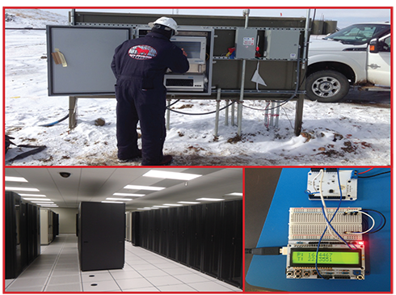

Well-Monitoring | Electronics Manufacturing | Well-Site Services

201 Hebert Road
Scott, LA 70583
337-962-7509
Data Specialties Group is a Data Monitoring manufacturing and services company that provides integrated solutions to critical operations creating a safer Work environment.
Quality Service • Well Site Support
Well Profile Visualization Technology
Data Engineers have at least 3 years of electronic repair/maintenance experience before they can be employed with Data Specialties Group.
Minimum training requirements for our Data Engineers are:
Data Specialties Group is a member of ISNetworld and all Data Engineers are enrolled in the DISA program. Every employee at Data Specialties Group, from the President of the company to our new hires, plays an important role in our safety program.
ISO 9001:2000 Quality Standards
Surface Data Acquisition Systems (SDAS) • Well-Monitoring
Our Surface Data Systems can be configured to provide single-well data acquisition or multiple-well data acquisition from a single system. Our data acquisition equipment ensures that data is secure and well information is available in real-time. Real-time data allows operators to reduce costs with better production decisions, provide reservoir optimization and improve production management. Real time well data includes pressure, temperature, flow and fluid analysis.
Data Specialties Group provides equipment manufacturing of production surface systems for data acquisition and well monitoring.
Integrated service company for Major and independent Oil and Gas operators.
Services We Offer: